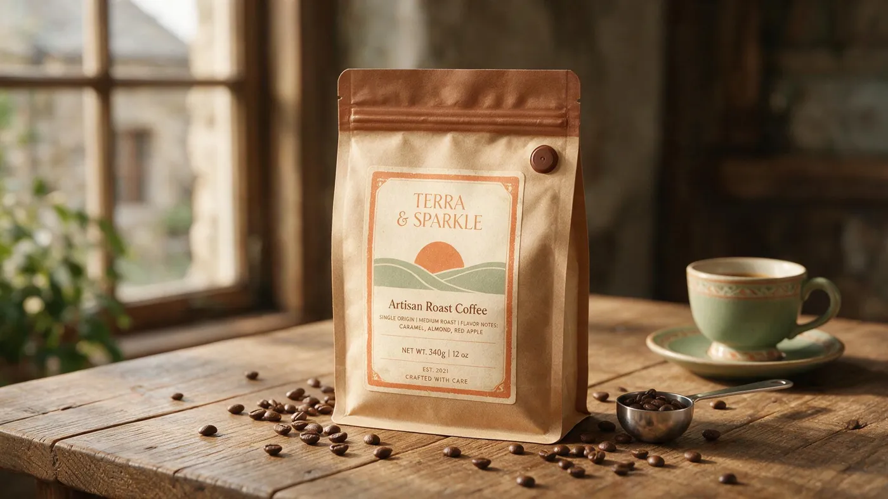
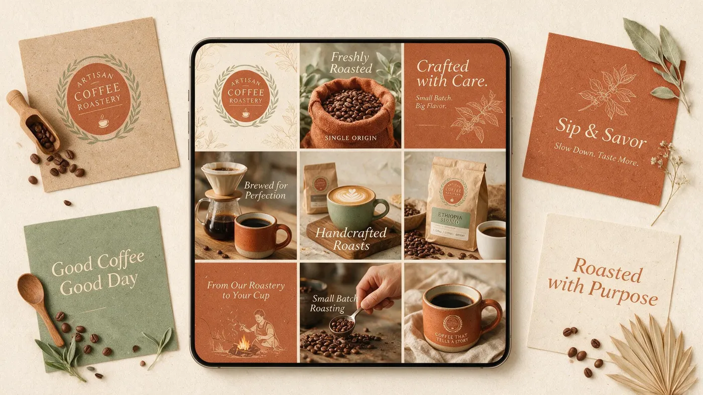

Aurora do grão à marca.

O BRIEFING (INVENTADO)
Uma torrefação de café especial que vende direto ao consumidor, em assinatura e em cafeterias parceiras. O produto é bom e caro. O problema do briefing: na prateleira e no feed, ela era indistinguível de qualquer marca artesanal com fundo kraft e desenho de grão.
A DIREÇÃO
Calor e artesania sem cair no rústico genérico. Serifada de personalidade no nome, sol nascente como símbolo — Aurora é o começo do dia, e café é o que começa o dia. A paleta sai do marrom obrigatório e ganha terracota e sage, que dão o ar de produto de origem sem parecer embalagem de mercado.
O SISTEMA
Wordmark, símbolo, paleta de quatro tons, escala tipográfica, arquitetura de rótulo e templates de feed. O suficiente para a marca operar sozinha: quem for produzir o próximo blend sabe exatamente onde cada informação entra.
PALETA
APLICAÇÕES


AS DECISÕES
A cor muda, o rótulo não
Cada blend tem um tom de embalagem, mas o rótulo é sempre o mesmo — mesmo tamanho, mesma posição, mesma hierarquia. Um lançamento novo não exige decisão de design: escolhe-se o tom e escreve-se a origem. É o que faz uma linha crescer sem virar colcha de retalhos.
O nome grande, a origem pequena
A tentação era dar o mesmo peso a Aurora e ao nome do blend. Na gôndola isso vira ruído: o cliente precisa reconhecer a marca a três metros e ler a origem a trinta centímetros. Por isso o nome ocupa o dobro do corpo e a origem vive em itálico, abaixo da régua.
Notas de degustação em caixa alta e tracking largo
É a informação que o cliente de café especial procura primeiro. Em caixa alta com tracking aberto ela lê como ficha técnica, não como texto publicitário — e sinaliza que a marca sabe do que está falando.
Sem foto de grão na embalagem
Toda torrefação artesanal usa. Justamente por isso. O símbolo do sol resolve o reconhecimento e libera a embalagem de parecer com as vizinhas.